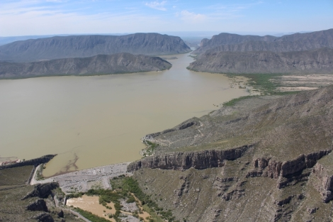
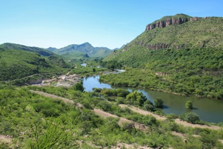

Conoce la Cuenca - Nuevo proyecto 1 - WEBSITE X5 TRIAL VERSION
×
INICIO
La Cuenca del Nazas
Qué es?
El Río Nazas
Agua Saludable
Mapa Interactivo
Mapas
La Cuenca del Nazas
Agua Saludable
Cuenca en Imágenes
Conoce la Cuenca
P. Lázaro Cardenas
P. Fco Zarco
Río Nazas
Cañón Fernández
Fb
Yt
Tw
Vaya al Contenido
La Cuenca del Nazas en Imágenes


Regreso al contenido
Para utilizar este sitio tienes que habilitar JavaScript.